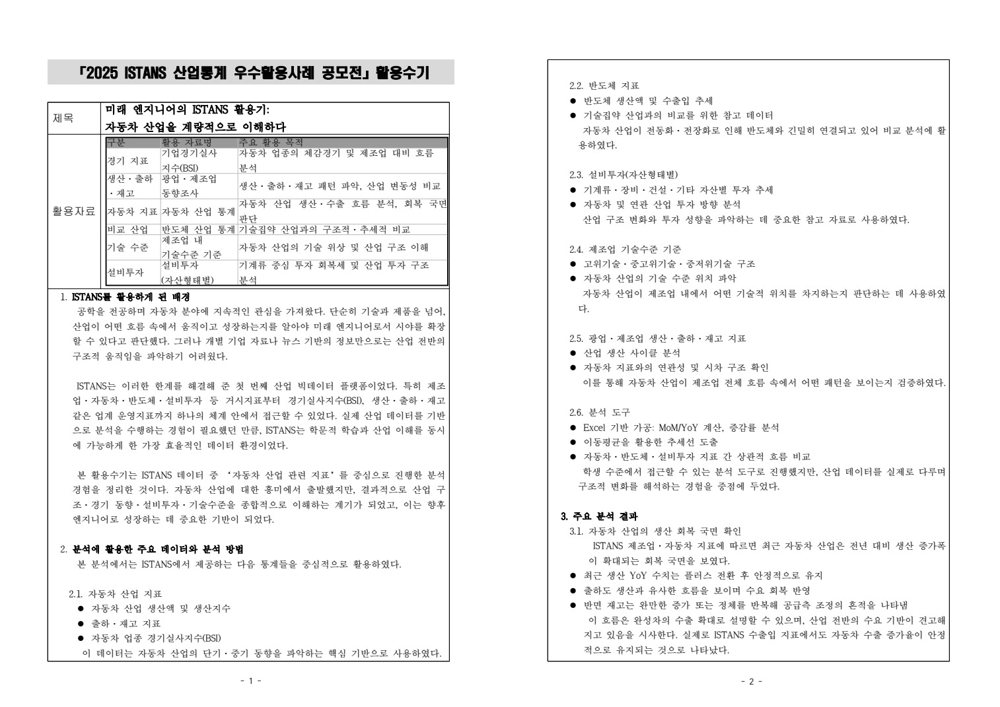
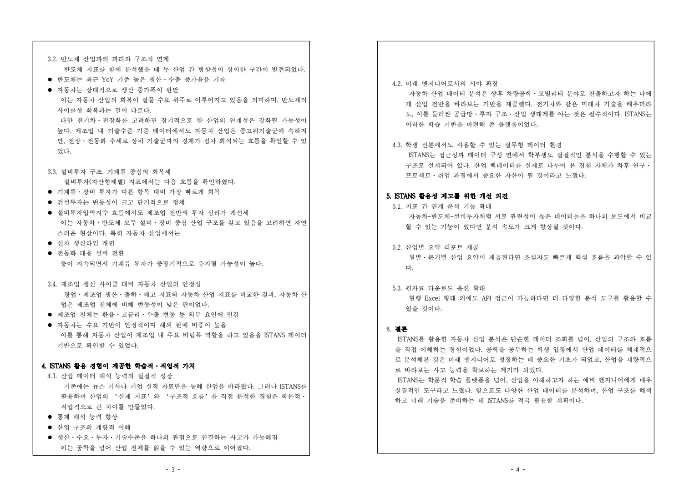

자동차 산업을 읽기 위한 질문
제품 관심에서 산업의 흐름으로
자동차를 설계하는 엔지니어의 관점을 산업의 생산·수요·투자 구조로 넓히고자 했습니다. 뉴스나 개별 기업의 실적만으로 전체 업종을 설명하기보다, 같은 통계 체계 안에서 관련 지표를 비교해 보는 학습 경험을 2025 ISTANS 산업통계 우수활용사례 공모전 수기로 정리했습니다.
선택한 지표의 역할
자동차 생산·출하·재고는 실물 흐름, BSI는 업종의 체감경기, 설비투자는 투자 방향을 읽는 자료로 사용했습니다. 반도체 지표와 제조업 기술수준 분류는 자동차와 연관 산업의 구조를 비교하는 참고 축으로 두었습니다. 서로 단위와 의미가 다른 지표를 같은 현상으로 취급하지 않는 것이 출발점입니다.
실제 작업의 범위
활용수기에는 Excel 기반의 전월·전년 동기 증감률과 이동평균, 지표 사이 흐름 비교를 기술했습니다. 복잡한 예측 모델을 개발한 경험보다 공학 전공자가 산업 통계를 선택하고 해석해 설명한 경험입니다. 개인 활용수기와 기타 활용성과물 자료가 결과물로 남아 있습니다.
당시 분석과 현재 사실의 구분
수기의 “최근 회복세” 같은 문장은 작성 당시 자료를 해석한 서술입니다. 이 포트폴리오는 그 분석 경험을 소개하며 현재 자동차 산업의 경제 상황을 새로 진단하는 문서로 사용하지 않습니다.
여섯 데이터셋을 같은 질문에 연결하기
분석자료는 BSI, 생산·출하·재고, 자동차, 반도체, 제조업 기술수준, 자산형태별 설비투자 여섯 묶음입니다. BSI는 기업이 느끼는 심리, 생산·출하·재고는 실물 흐름, 자동차·반도체는 산업별 변동, 기술수준·설비투자는 구조적 위치를 살피는 용도로 나눴습니다. 활용수기의 설명과 발표자료의 데이터 출처를 연결해 어떤 지표가 어떤 해석의 근거인지 표시했습니다.
작업 도구는 Excel 기반 증감률·MoM/YoY 계산과 이동평균, 시계열 비교입니다. 예측모형을 개발하거나 산업의 인과구조를 추정한 작업으로 확대하지 않습니다. 자동차라는 제품의 기술만 보던 시야에서 시장·공급망·투자까지 질문을 넓히고, 산업별 지표가 같은 방향으로 움직이지 않을 수 있다는 점을 비교하는 학습 기록입니다.
근거: ISTANS_산업통계_우수활용사례_공모전_활용수기_권용민.pdf (본문 논리적1–4쪽(추출PDF2페이지)); ISTANS_산업통계_우수활용사례_공모전_기타활용성과물_권용민.pptx (데이터셋/분석1–8/종합결론)
활용수기와 지표 비교의 구성

문서가 따라가는 흐름
결과물은 자료 선택, 분석 방법, 산업별 비교, 학습적 가치와 플랫폼 개선 의견으로 이어집니다. 자동차 지표를 중심에 두고 반도체·설비투자·제조업 전체를 비교 축으로 둬 단일 숫자만 읽는 방식을 벗어나려 했습니다.
지표를 연결한 이유
생산이 증가해도 재고와 출하의 흐름에 따라 해석이 달라질 수 있습니다. BSI와 실물 지표 역시 성격이 다릅니다. 따라서 각 지표가 보여 주는 질문을 구분하고, 여러 자료가 함께 제시하는 맥락을 문장으로 정리했습니다. 공학적 관심과 산업 구조를 연결하는 설명의 틀을 만든 작업입니다.
실제 결과물 보기
아래 이미지는 작성한 활용수기의 원본 PDF 페이지입니다. 지표별 활용 목적과 분석 방법, 해석과 개선 의견을 직접 확인할 수 있습니다. 첫 페이지는 두 논리 페이지를 한 장에 배치한 원본 출력 형식이므로 확대해 읽을 수 있습니다.
산출물에서 강조할 점
확인 가능한 것은 활용수기와 관련 자료의 작성입니다. 원시 시계열을 다시 계산해 모든 수치·인과관계를 독립 검증한 분석 보고서로 확대하지 않습니다. 문서에 서술한 산업 해석과 실제로 재현 가능한 계산 근거의 차이를 함께 인식하는 것이 이후 분석의 기준이 됐습니다.

실제 발표자료가 보여 주는 월별 비교
발표자료는 2025년 10월 제조업 업황실적BSI 68과 매출실적BSI 78을 나란히 놓고, 매출 상황과 업황 심리가 같지 않을 수 있다고 해석했습니다. 실물 지표에서는 8월 제조업 생산 110.9·출하 102.3과 9월 121.5·112.5의 변화를 비교했습니다.
자동차 생산지수는 4월 137.8에서 7월 120.4까지 낮아진 뒤 8월 122.9, 9월 128.1로 반등하는 흐름을 제시했습니다. 8월에는 생산 122.9보다 출하 118.7이 낮고 재고는 140.7, 9월에는 생산 128.1·출하 128.0과 재고 135.2를 함께 보여 주었습니다. 이처럼 하나의 상승·하락 수치보다 생산·출하·재고 관계를 보는 방식이 결과물의 핵심입니다. 이 숫자는 제출 발표자료에 기재된 당시 지표이며 현재 산업상황을 설명하는 최신 통계는 아닙니다.
활용수기와 발표자료의 연결을 남기기
발표자료는 각 비교 뒤에 ‘활용수기 연결’ 문단을 두어 어떤 주장에 사용한 지표인지 설명했습니다. 산업 심리를 확인하는 BSI, 제조업 전체를 비교 기준으로 삼는 생산·출하·재고, 자동차의 월별 변동, 수출·물가의 보조 비교, 반도체와의 대비, 기술수준과 투자 구조의 순서입니다. 그래프를 모아 놓는 데서 끝내지 않고 서술의 근거 위치를 독자가 따라가게 하려는 구성입니다.
이 방식은 수기와 슬라이드가 다른 이야기를 하지 않도록 검토할 출발점도 됩니다. 수기는 자동차의 회복과 제조업 안의 위치를 넓게 설명하고 발표자료는 특정 기간의 수치를 제시하므로, 포트폴리오에서는 범위를 명확히 적어야 합니다. 예를 들어 자동차의7월120.4→9월128.1은 두 달 사이 지수8월·9월 반등을 보여 주지만 장기 성장률이나 수요 원인의 확정은 아닙니다. 제출자료에서 제시한 관찰과 해석을 분리해 읽는 과정을 함께 남기는 것이 이 작업을 더 정확하게 설명합니다.
근거: ISTANS_산업통계_우수활용사례_공모전_활용수기_권용민.pdf (본문 논리적1–4쪽(추출PDF2페이지)); ISTANS_산업통계_우수활용사례_공모전_기타활용성과물_권용민.pptx (데이터셋/분석1–8/종합결론)
장려상과 분석 기록의 개선 방향
확인된 결과
2025 ISTANS 산업통계 우수활용사례 공모전에서 개인 장려상을 받았습니다. 해당 수상과 제출용 활용수기·성과물은 연결되는 기록입니다. 팀 수상과 구분해 개인 활동으로 정리합니다.
활용 경험의 가치
차량의 부품·성능 관심을 생산과 투자, 산업 생태계의 질문으로 넓혔습니다. 자료를 가져오는 것에서 끝나지 않고 어떤 지표를 왜 선택했고 무엇을 비교했는지 설명하는 과정을 경험했습니다. 학생이 접근할 수 있는 Excel과 공개 통계로 산업을 읽어 본 사례입니다.
해석의 한계
여러 지표가 같은 방향으로 움직이는 것과 인과관계를 증명하는 것은 다릅니다. 원고의 비교 서술만으로 전망 정확도나 투자 판단 능력을 검증했다고 쓰지 않습니다. 시기·기준연도·단위·계절조정 여부를 명확히 남기고 원자료와 계산표를 함께 연결하는 작업은 후속 분석에서 더 보완할 부분입니다.
다음에 남길 기록
지표명·조회 시점·다운로드 판본·가공식과 차트를 연결하면 같은 분석을 다시 수행하기 쉬워집니다. 당시 수기의 플랫폼 개선 의견도 지표 간 비교, 산업별 요약과 자료 접근성에 집중했습니다. 이 경험을 이후 데이터 프로젝트에서 출처와 처리 과정을 남기는 태도로 이어갑니다.
지표를 읽으면서 남긴 해석의 경계
수출·물가·반도체 자료는 생산 움직임을 다른 각도에서 살피는 보조 축입니다. 제조업의 중고위기술 비중 44.3%(2023년)와 건물 51.2%·기계장치 41.4%의 설비투자 구성도 기술 변화가 자산 투자와 연결된다는 설명에 사용했습니다. 발표자료가 어떤 산업적 질문을 세웠는지 보여 주되 원자료·산식의 독립 재검증을 완료한 것처럼 쓰지 않습니다.
두 산업의 생산지수 수준 자체를 생산 규모의 크기로 비교하거나 수출 회복을 생산 반등의 원인으로 확정하는 것은 피합니다. 서로 다른 기준의 지수는 기준년·단위·계절조정 여부를 먼저 맞춰야 합니다. 포트폴리오에는 실제로 작성한 비교의 구조와 장려상 수상 사실을 남기고, 향후에는 표의 기간·단위·다운로드일과 계산 시트를 함께 보존하는 개선 방향을 적는 편이 정확합니다.
근거: ISTANS_산업통계_우수활용사례_공모전_활용수기_권용민.pdf (본문 논리적1–4쪽(추출PDF2페이지)); ISTANS_산업통계_우수활용사례_공모전_기타활용성과물_권용민.pptx (데이터셋/분석1–8/종합결론)
기록의 근거
근거: 본인 명의 ISTANS 활용수기 PDF·HWPX와 기타 활용 성과물 PPTX. 장려상은 기존 프로젝트 채팅의 본인 확인 및 활동·수상 정리 기록을 반영했습니다.
2026-10-20 기준. 개인 담당과 팀 기여, 해석·계획과 실측·완료 결과를 구분했습니다.